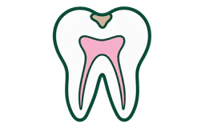
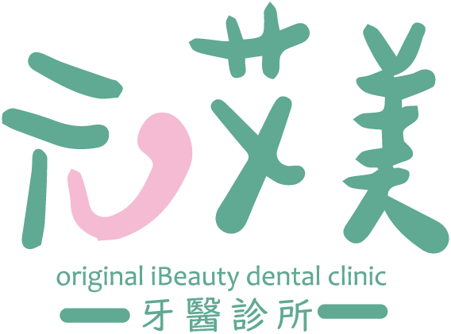
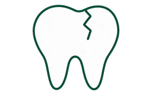
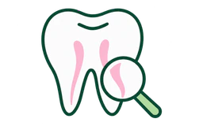
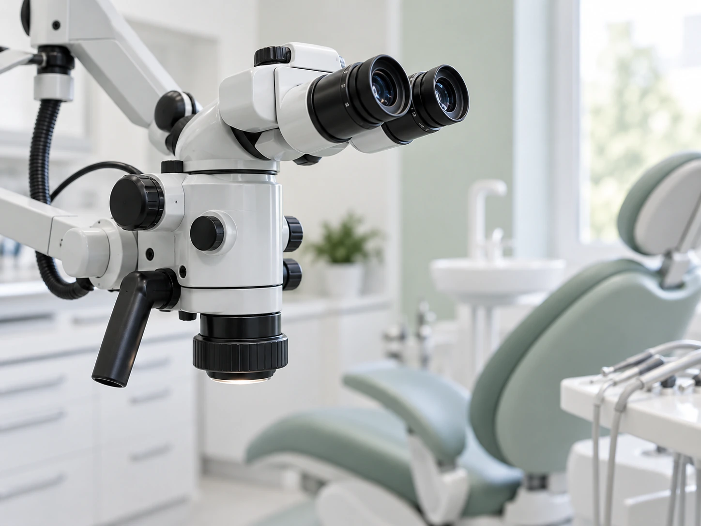
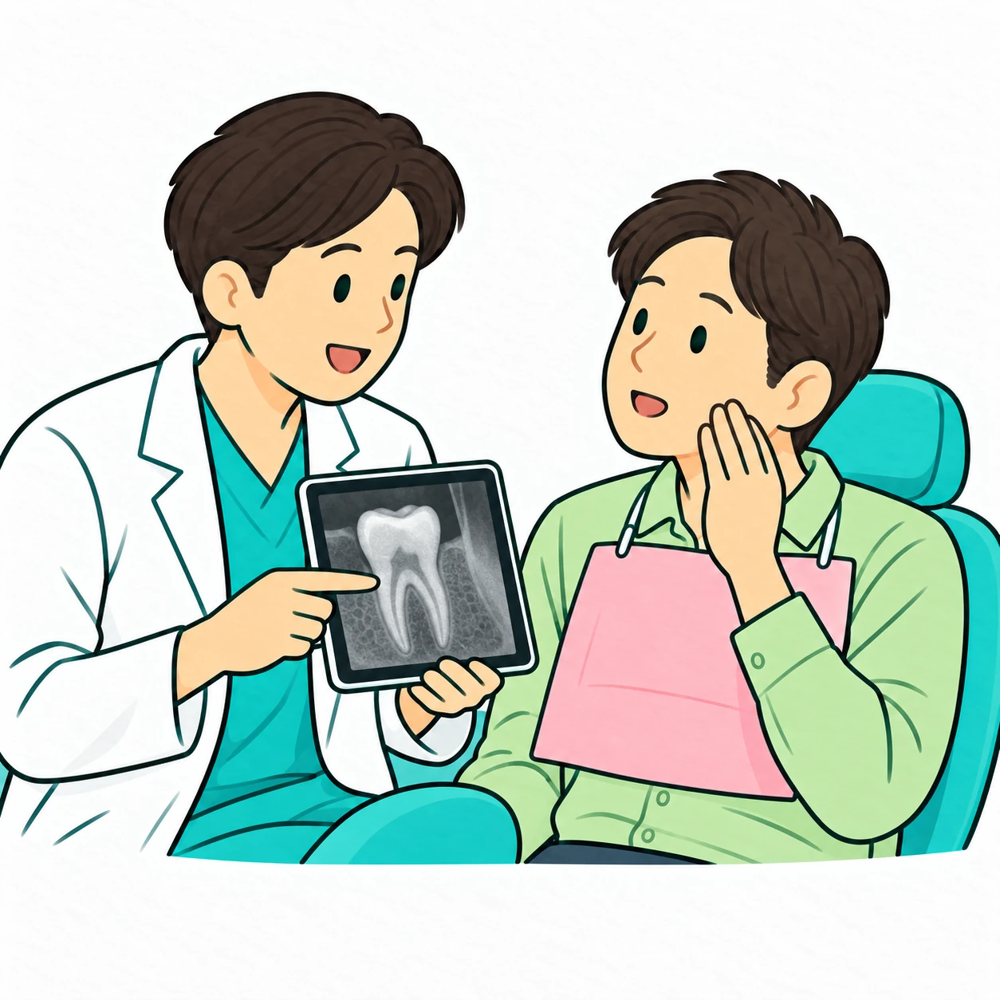
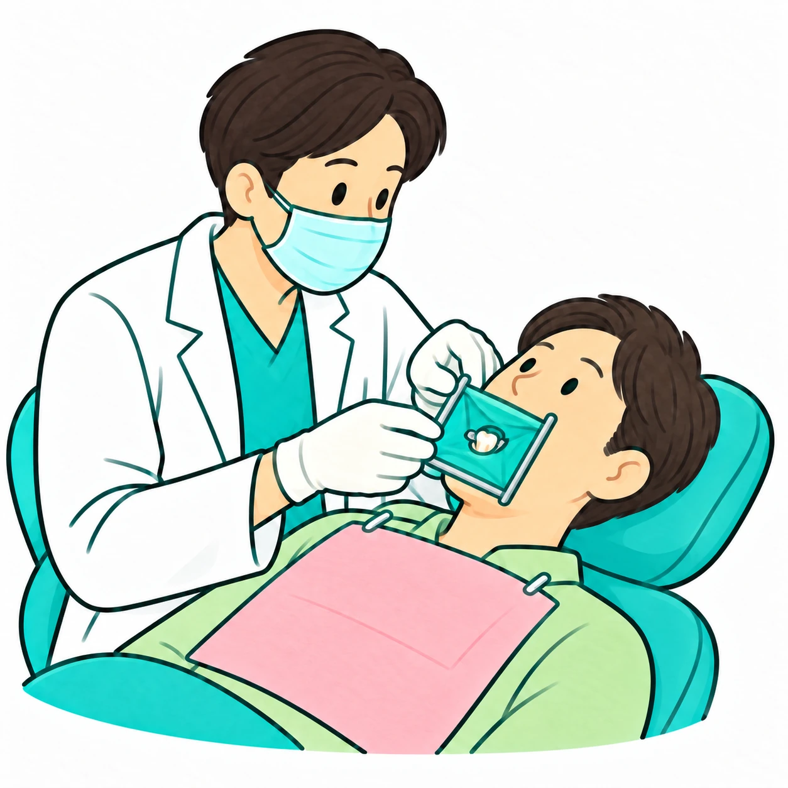
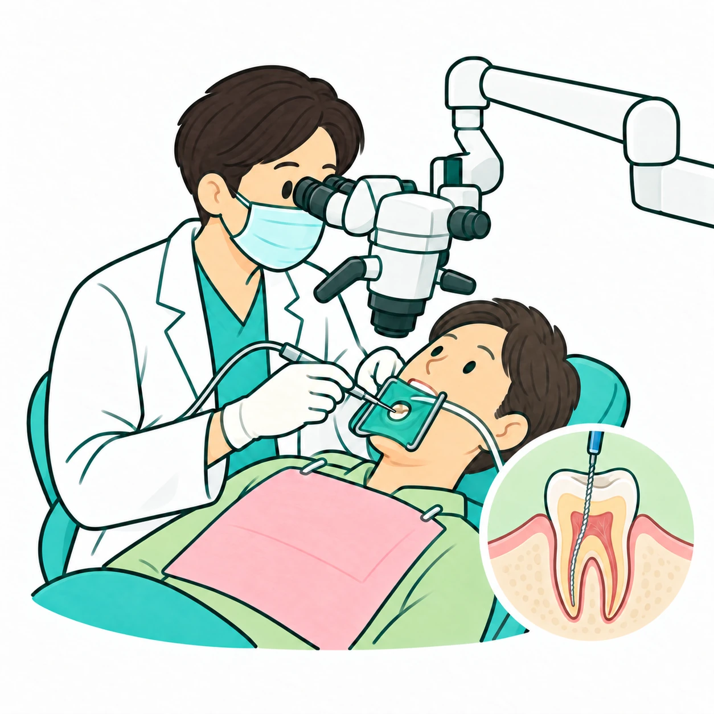
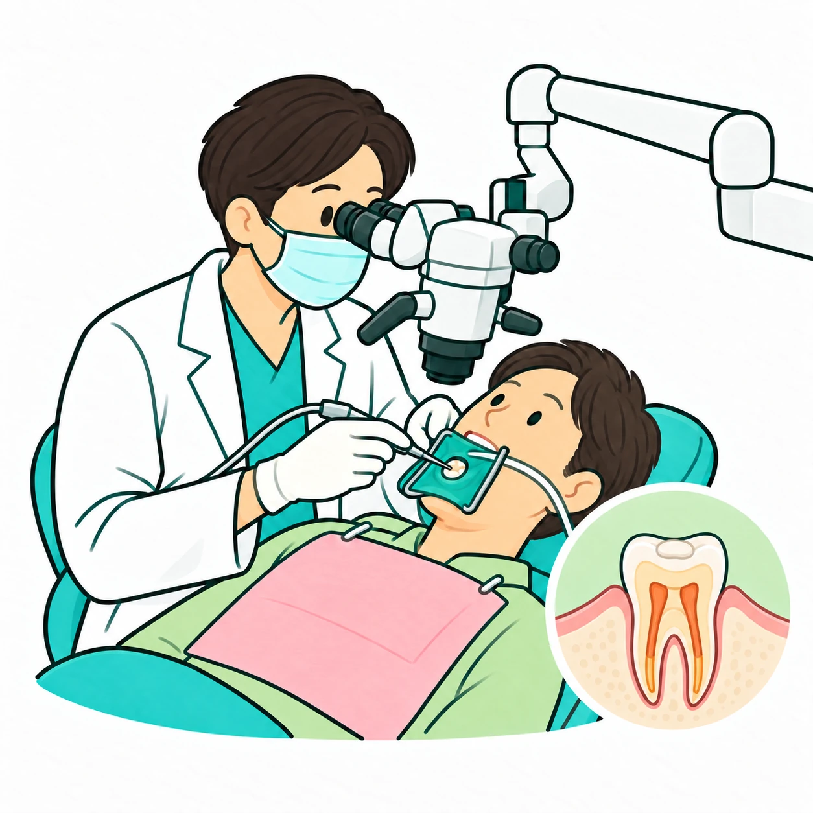
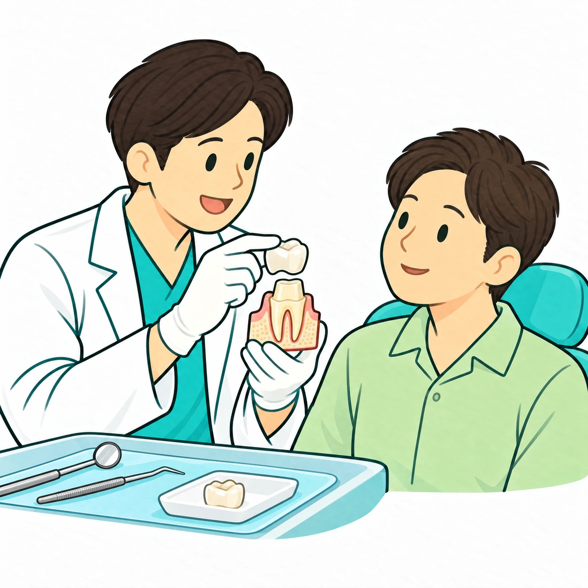

深度蛀牙或牙髓發炎
冷熱痛持續、夜間自發痛，或蛀牙已接近與影響牙髓。

預約看診根管治療的目的，是移除牙齒內受感染或壞死的組織、清潔根管系統並封填，盡可能保留自然牙齒。

冷熱痛持續、夜間自發痛，或蛀牙已接近與影響牙髓。

撞擊、斷裂或裂紋可能傷及牙髓，需合併臨床與影像判斷。

若根管治療後仍疼痛、腫脹或出現病灶，可能需要再次評估。

牙齒內部的根管可能狹窄、彎曲或被鈣化遮蔽。顯微鏡讓醫師在放大且明亮的視野下工作，作為診斷與治療的輔助工具。
治療結果仍受到感染範圍、根管形態、牙根裂紋、剩餘齒質、牙周狀況與後續修復影響。若牙齒已無法合理保存，醫師也會誠實說明其他選擇。

了解症狀、檢查牙髓與牙周，安排必要影像。

依情況麻醉，並以橡皮障隔離治療牙齒。

移除感染組織，清潔、消毒並處理根管形態。

依治療階段封填根管或放置藥物，安排後續回診。

評估補牙、嵌體或牙冠，恢復密封、外形與咬合。
根管治療後的牙齒可能因原有缺損與齒質減少，需要適當修復。完成前避免用治療側咬硬物，並依約回診。
俗稱抽神經，但完整治療還包含根管清潔、消毒、塑形與封填，不只是移除牙髓。
不一定。是否使用要依牙齒位置、根管形態、治療難度與醫師判斷。
不能保證。若有垂直牙根裂、嚴重牙周破壞或剩餘齒質不足，保存條件可能有限。
會依感染程度、症狀、根管複雜度及是否為再次治療而不同，檢查後才能較具體說明。
從症狀、影像、裂紋、牙周與剩餘齒質一起評估，再討論顯微根管或其他合適選擇。
點我預約